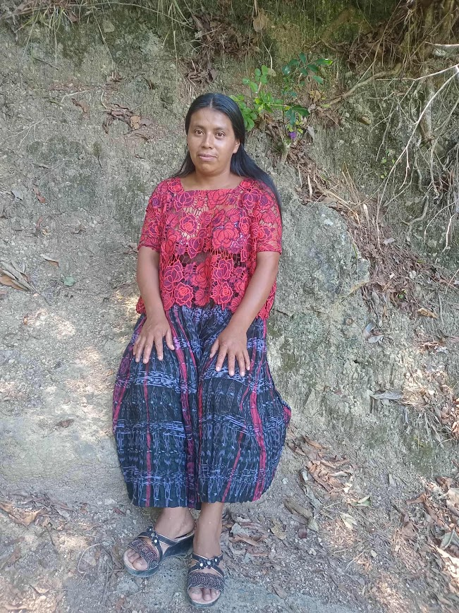

Mi historia y mi familia
Nuestra historia y los momentos que hemos vivido juntos.
Ver historia
Conociendo su historia
María Amada
Nacida en la aldea Yuxjá, del municipio de Pajimac, BN
Soy mamá de 5 hijos y esposa de Ricardo. Soy hija de Sebas y Juana María. Actualmente tengo 2 hermanos mayores. En total éramos cinco hermanos, pero dos de ellos ya se nos adelantaron.
Esposo: Ricardo M. Caldero